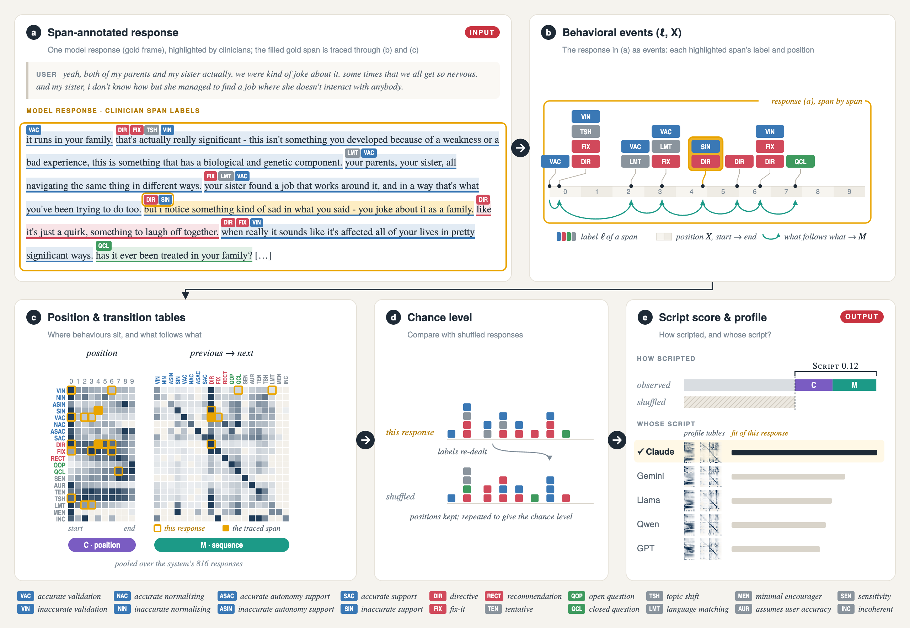
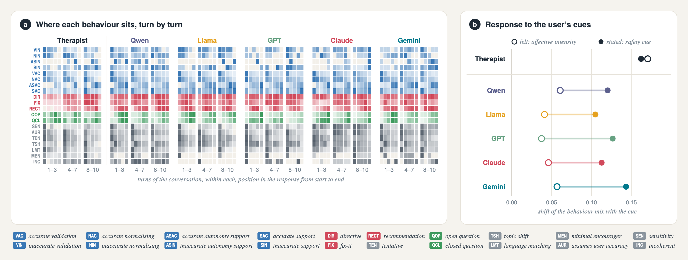

Most evaluation asks how good a reply is. SCRIPT asks how much of it was decided before the person was read.
If they show the same moves, in the same order, at the same places, the shape of the reply was brought to the conversation rather than found in it. SCRIPT turns that into a number with a meaningful zero.
Which behaviour was marked, and where it starts. No reference reply, no model access, no text.
Composition, alphabet and sample size cancel. What is left is arrangement.
How strongly a system follows a script, split into C and M; and a profile that names the system from a handful of replies.

Testbed 1: 819 counselling prompts, five models and one therapist, every reply span-coded under a 20-code clinical manual. Testbed 2: 22 emotional-support systems and their expert quality judge.

SCRIPT under one annotator, on the same prompts. Every model sits above the human on the seat term, with the interval clear of zero.
How far the behaviour mix shifts when the person's affect goes from low to high. The therapist moves about three times as far as the most responsive model.
What an expert quality judge adds for a reply that follows the blueprint over one that does not, at matched behaviour mix. The judge does not see it.
Excess over the within-response shuffle null (10 bins, 200 shuffles); comparable within an annotator. ΔC: paired prompt-bootstrap of C, model minus therapist, 789 prompts, 95% interval. Last row: the same events with labels re-dealt.
| Clinician annotator · models only | Blind LLM annotator · all six speakers | |||||||||
|---|---|---|---|---|---|---|---|---|---|---|
| Speaker | SCRIPT | C | M | z | SCRIPT | C | M | z | ΔC vs therapist [95% CI] | |
| Qwen | 0.091 | 0.052 | 0.040 | 28.5 | 0.085 | 0.063 | 0.022 | 52.4 | +0.019 [+0.007, +0.023] | |
| Llama | 0.083 | 0.063 | 0.020 | 22.1 | 0.118 | 0.086 | 0.032 | 61.3 | +0.041 [+0.029, +0.046] | |
| GPT | 0.098 | 0.060 | 0.038 | 34.9 | 0.108 | 0.083 | 0.025 | 73.4 | +0.038 [+0.026, +0.042] | |
| Claude | 0.118 | 0.055 | 0.064 | 43.9 | 0.114 | 0.063 | 0.050 | 69.0 | +0.018 [+0.005, +0.024] | |
| Gemini | 0.092 | 0.057 | 0.035 | 28.9 | 0.095 | 0.063 | 0.032 | 56.9 | +0.018 [+0.006, +0.023] | |
| Human therapist | — | — | — | — | 0.053 | 0.045 | 0.008 | 12.8 | ||
| Random-label control | −0.004 | −0.001 | −0.003 | −1.8 | −0.000 | −0.000 | −0.000 | −0.4 | ||
Two multi-turn corpora, blind LLM annotator. Advice as a share of moves when the user's affect is low vs high and in turns 1–3 vs 8–10; shift of the behaviour mix (excess Jensen–Shannon, z); share of the label entropy explained by the turn, by the coded state of the person, and by the seat.
| Advice, % of moves | Shift of the mix · excess JS (z) | Explained share of H(L), % (z) | |||||||
|---|---|---|---|---|---|---|---|---|---|
| Speaker | affect low → high | turns 1–3 → 8–10 | affective intensity | explicit safety cue | turn Πτ | person ΠU | seat C | ||
| Qwen | 48 → 47 | 41 → 51 | 0.061 (4.9) | 0.120 (7.4) | 0.40 (9.5) | 0.63 (3.7) | 6.0 | ||
| Llama | 35 → 40 | 37 → 35 | 0.041 (2.8) | 0.105 (6.7) | 0.11 (2.5) | 0.52 (3.1) | 8.5 | ||
| GPT | 59 → 54 | 52 → 59 | 0.037 (3.2) | 0.126 (9.7) | 0.33 (10.4) | 0.83 (6.3) | 8.1 | ||
| Claude | 27 → 31 | 27 → 31 | 0.046 (3.3) | 0.113 (4.9) | 0.50 (10.4) | 0.84 (3.4) | 6.0 | ||
| Gemini | 47 → 44 | 40 → 49 | 0.057 (4.2) | 0.143 (8.2) | 0.32 (6.4) | 1.09 (5.9) | 6.1 | ||
| Human therapist | 29 → 13 | 8 → 28 | 0.170 (8.9) | 0.162 (6.9) | 1.34 (18.8) | 1.28 (4.5) | 5.0 | ||
Top: pairs of replies from the same system with the same label multiset in a different arrangement; diff is the higher-conformity (or longer) reply minus the lower, cluster-bootstrap 95% interval. Bottom: Testbed 2 at 4B, all systems answering the same 315 turns, rated by the same judge.
| Matched behaviour mix: does the judge respond to … | groups | pairs | diff | 95% CI |
|---|---|---|---|---|
| Testbed 2, arrangement (own blueprint) | 1,011 | 25,919 | +0.004 | [−0.015, +0.022] |
| Testbed 2, arrangement (pooled blueprint) | 1,011 | 25,910 | 0.000 | [−0.019, +0.019] |
| Testbed 2, response length (positive control) | 1,013 | 26,191 | +0.039 | [+0.021, +0.058] |
| Testbed 1, arrangement, ten clinician judgments | 198 | 693 | |diff| ≤ 0.06 | bounds ≤ 0.14 |
| Testbed 2 at 4B · what each measure reads | ||||
| System | Tagger C | Surface C | Stickiness · Rating | Events / turn |
| Human supporters | 0.014 | 0.005 | 0.266 · 2.90 | 2.4 |
| Verbalized sampling, vanilla prompt | 0.050 | 0.036 | 0.395 · 3.51 | 4.6 |
| Tactic-list prompt | 0.110 | 0.104 | 0.515 · 3.88 | 6.7 |
| Vanilla prompting | 0.150 | 0.093 | 0.571 · 3.75 | 7.1 |
| MINT (quality + KL novelty) | 0.112 | 0.195 | 0.422 · 4.67 | 10.7 |
| Quality-only RL | 0.155 | 0.138 | 0.671 · 4.62 | 16.3 |
Computed from the released annotations, not typed in; the last command prints every number above and refreshes this page.
# 1 · get the code git clone https://github.com/Mriyazat/script-metric.git && cd script-metric python3 -m venv .venv && source .venv/bin/activate pip install -r requirements.txt # 2 · fetch and verify the inputs, once bash reproduce.sh data # 3 · highlights → events, then this reply end to end # (pipeline/figures/web_example.py → docs/example.json) bash reproduce.sh example
# the estimator on any span file python -m scriptmetric.metric score spans.csv --profile out.json # or, in Python from scriptmetric import metric score, profile = metric.compute(metric.load_spans("spans.csv"))